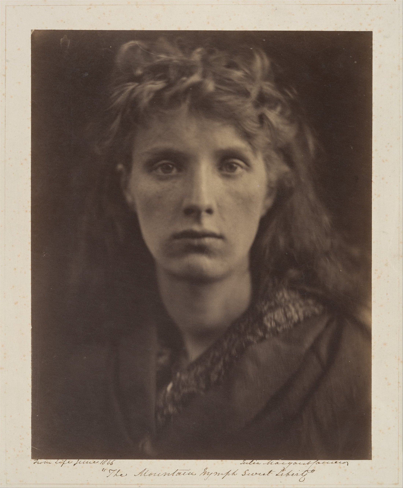

The edges dissolve. The gaze stays present.
Eyes anchor a horizontal axis.
A garment diagonal unsettles symmetry.
Muted warm analogous tones.
Value separates ivory, ochre and brown.
The face emerges.
Hair recedes into the background.
Suggested colours and ratios; not object measurements.
Albumen silver print from a glass negative.
Soft edges direct attention to the eyes.
Cameron received her first camera at 48,
then exhibited, published and sold her work.
Liberty is not performed as a smile.
Hesitation and resolve share one gaze.
Plain dark background; frame at the shoulders.
Keep the gaze and shadow detail.
Compare sharp and gently softened frames.
60% ivory + 30% shadow + 10% skin brown.
Give the layout one main light area.
Suggested colours and ratios; not object measurements.
Julia Margaret Cameron · 1866
The Mountain Nymph Sweet Liberty
The Metropolitan Museum of Art · 41.21.15
Original creator’s rights where applicable; Public Domain.
Collection facts; editorial visual interpretation.